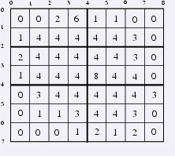

第一行给出N，M，R,S. N以M在[1,18]之间. R,S不大于N,M
下面N行M列给出矩阵. 每个格子的数在[0,10^8]
给出一个N行M列的矩阵.你可以横着切R刀，竖着切S刀将它分成小的矩阵.现在希望每个小矩阵的总和，最大的那个最小化.
总和最大的那个矩阵，其值最小可以为多少.
7 8 2 1
0 0 2 6 1 1 0 0
1 4 4 4 4 4 3 0
2 4 4 4 4 4 3 0
1 4 4 4 8 4 4 0
0 3 4 4 4 4 4 3
0 1 1 3 4 4 3 0
0 0 0 1 2 1 2 0
31
The 2-nd and 4-th parallel and the 4-th meridian divide the country into 6 rectangles with computation times 21, 13, 27, 27, 17, 31. The computation time of the complete forecast is 31.